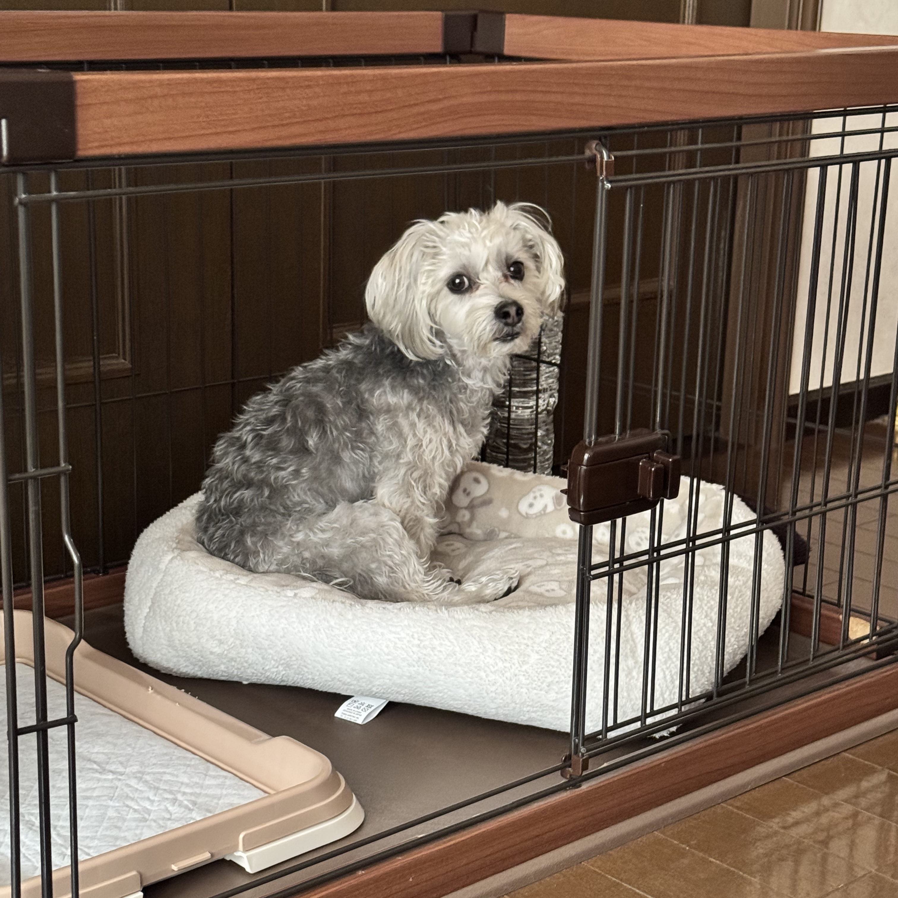

Contact Page

When there’s no warm sunlight streaming through the windows, you’ll often find FUU curled up comfortably in his room, taking a peaceful nap. And even when he’s spent time basking in the sun and gets a bit too warm, he’ll trot back to his room to cool down and relax in the shade. It's almost like he has his own rhythm — enjoying the sunshine, then retreating to his room for some quiet time.
Sometimes, when FUU wants to be alone, he'll quietly slip away from the bustle of the house and head straight to his room, without needing anyone to tell him. It’s his personal little world where he can rest, recharge, and just be himself. Watching him move so naturally between sunbathing and resting reminds us how important it is to have a place where you feel truly at home — and for FUU, that place has always been his special room.
Over time, FUU’s room has become much more than just a place to sleep — it’s truly his safe haven. In his room, he can stretch out, play with his favorite toys, or simply enjoy a quiet moment away from everything. Sometimes you can find him lying on his side, completely relaxed, with his paws twitching as he dreams.
It’s in this little space that FUU feels most himself. Whether he's cooling off after a sunny nap, resting after a burst of playful energy, or simply enjoying a bit of alone time, his room is always waiting for him — quiet, warm, and filled with familiar scents and memories.
We often peek in and find him happily snoozing or softly wagging his tail in his sleep. It's a reminder that even the smallest moments of comfort and security can mean the world — and for FUU, that world fits perfectly in his cozy little room.